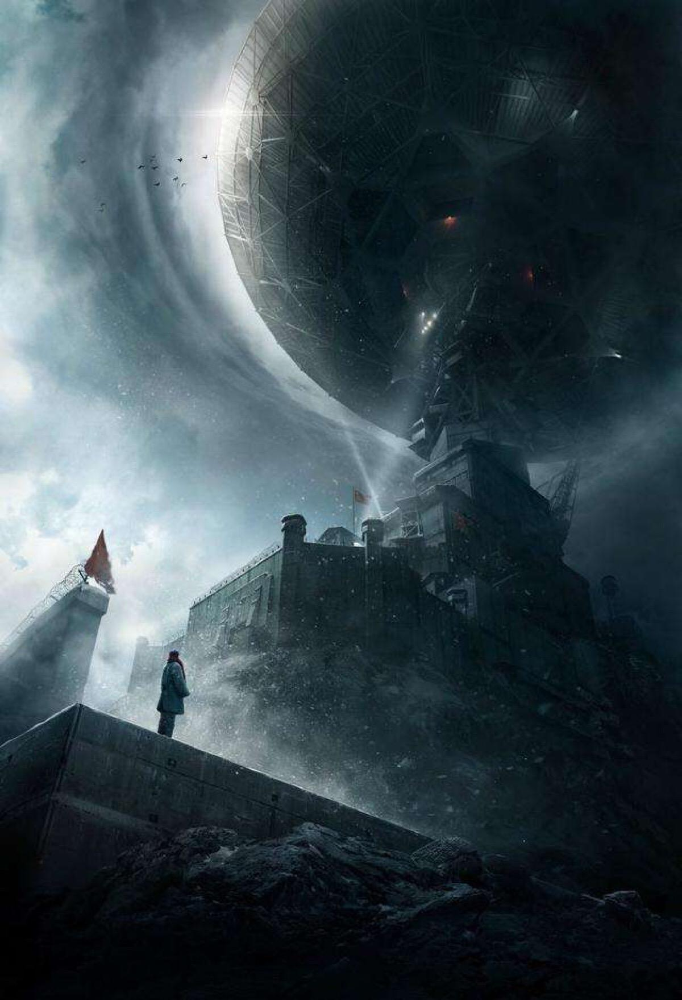

《三体》
三体》是刘慈欣的科幻小说，讲述了地球文明与三体文明的交互故事。这个故事跨越了数十年，涉及了大量的科学概念和哲学思考，是一部非常有深度的作品。
①第一部：《地球往事》
第一部讲述了地球人类与三体文明的第一次接触，以及人类如何应对三体文明的威胁的故事。
地球上的一些科学家接收到了从太空中传来的信号，这些信号来自于一个名为“三体”的行星。经过分析，科学家们发现这些信号是来自于一个高度发达的文明，并且这个文明正在向地球发起攻击。原来，三体文明的星球因为长时间的自然灾害而无法居住，他们决定侵略地球，以取代自己的家园。
地球方面为了应对三体文明的威胁，组织了一个名为“红岸基地”的组织，负责研究和应对三体文明的攻击。红岸基地的主要人物是叶文洁和汪淼，他们发现了一种名为“黑域”的技术，可以让人类的思维在三体文明的攻击中保持不受干扰，从而保证人类的生存。
但是，三体文明的攻击越来越猛烈，地球上的人类开始陷入绝望。在最后的时刻，叶文洁向三体文明发出了一个信号，告诉他们地球上的人类已经发现了三体文明的真正目的，并且准备放弃地球，让三体文明来接管地球。这个信号起到了奇效，三体文明停止了对地球的攻击，叶文洁和汪淼成为了地球上的英雄。
②第二部：《黑暗森林》
第二部讲述了人类和三体文明之间的战争，以及人类如何利用“黑暗森林”理论来对抗三体文明的故事。
在第一部中，叶文洁向三体文明发出的信号实际上是一个谎言，地球上的人类并没有准备放弃地球。相反，地球上的科学家们开始研究如何对抗三体文明的攻击。他们发现了一个名为“黑暗森林”的理论，这个理论认为宇宙中的文明都是自私的，都会尽可能地消灭其他文明，以确保自己的生存。因此，如果一个文明想要生存下去，就必须保持沉默，不让其他文明发现自己的存在。
基于这个理论，地球上的科学家们开始研究如何隐藏地球的存在，以免被三体文明发现。他们发明了一种叫作“超新星发动机”的技术，可以让地球在短时间内爆发出极大的能量，从而掩盖地球的存在。此外，他们还发明了一种名为“太空镜”的装置，可以探测到三体文明的星球，并且发现了三体文明的弱点。
最终，地球上的科学家们利用“黑暗森林”理论和这些新技术，成功地摧毁了三体文明的星球，结束了人类和三体文明之间的战争。
③第三部：《死神永生》
第三部讲述了人类和三体文明之间的和平共处，以及人类如何应对来自外太空的新威胁的故事。
在第二部中，地球上的科学家们摧毁了三体文明的星球，结束了战争。但是，这场战争留下了深刻的印象，让人类意识到宇宙中的文明之间的竞争是无休止的。因此，地球上的科学家们开始研究如何应对来自外太空的新威胁。
他们发现了一个名为“死神永生”的技术，可以让人类的意识永久存在于宇宙中，从而保证人类的生存。此外，他们还发明了一种名为“星门”的技术，可以让人类在宇宙中自由穿梭。
最终，人类和三体文明达成了和平共处的协议，开始了新的宇宙探索之旅。但是，他们很快发现，来自外太空的新威胁正在向他们靠近，人类和三体文明必须团结起来，应对这个新的威胁。
总结:
《三体》是一部非常有深度的科幻小说，涉及了大量的科学概念和哲学思考。通过讲述地球人类与三体文明之间的交互故事，刘慈欣探讨了宇宙中的文明之间的竞争和合作，以及人类如何应对来自外太空的威胁。这个故事跨越了数十年，涉及了大量的人物和情节，是一部非常值得一读的作品。